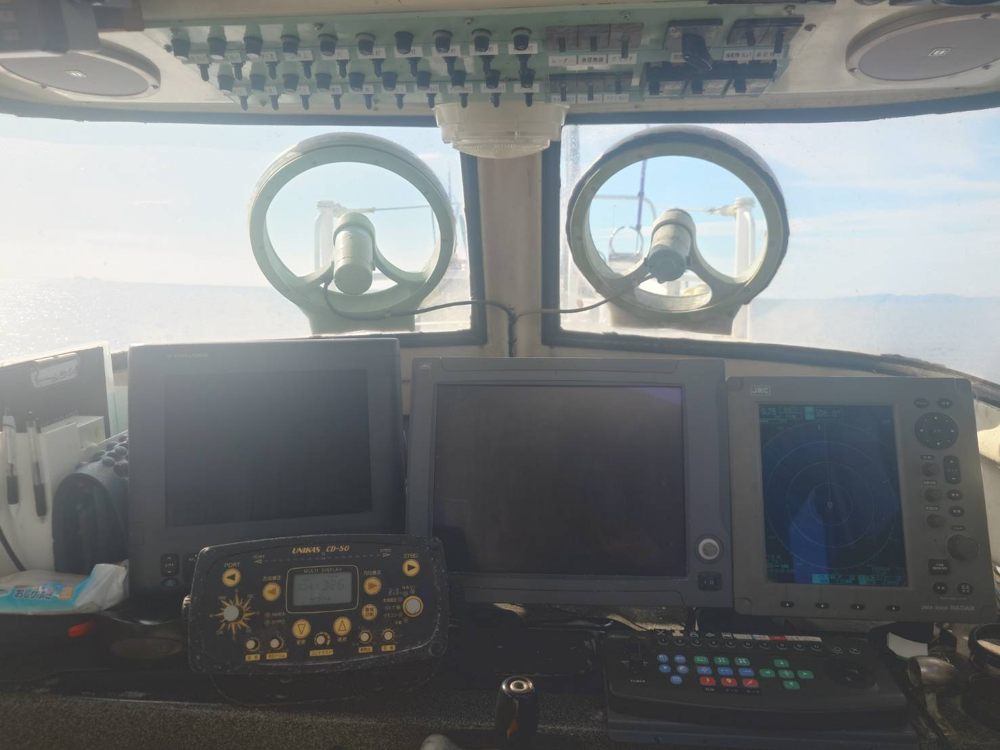
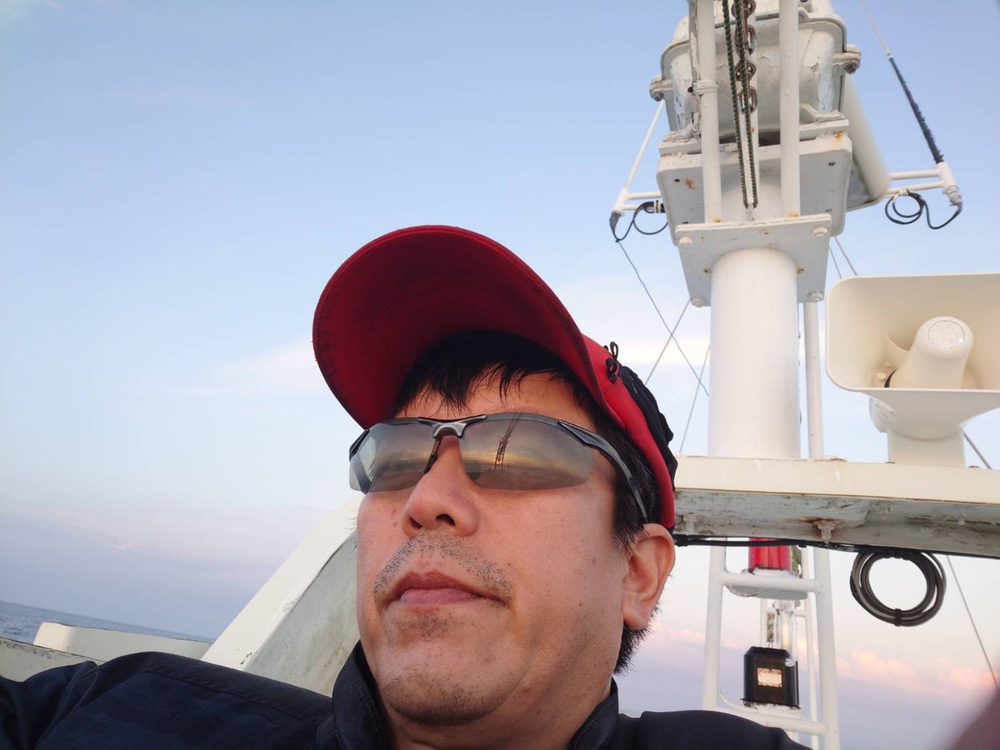
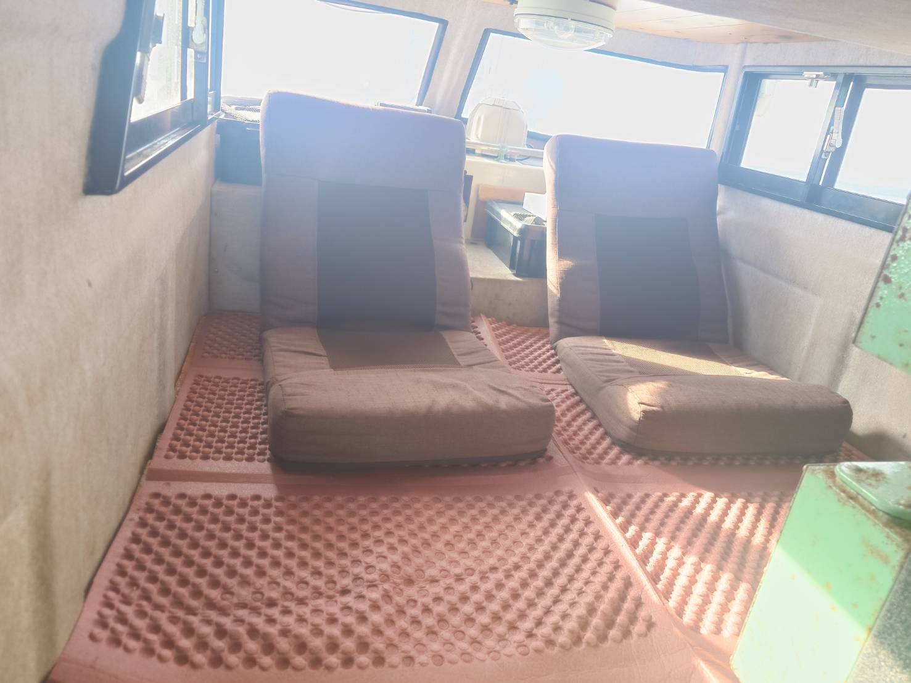
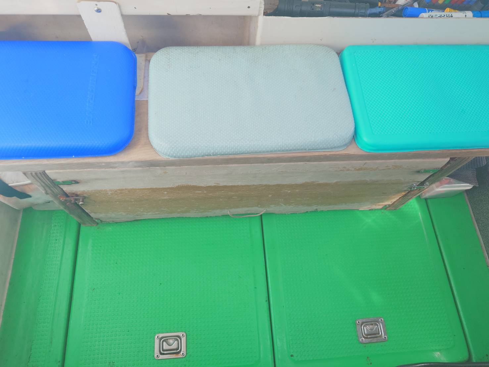
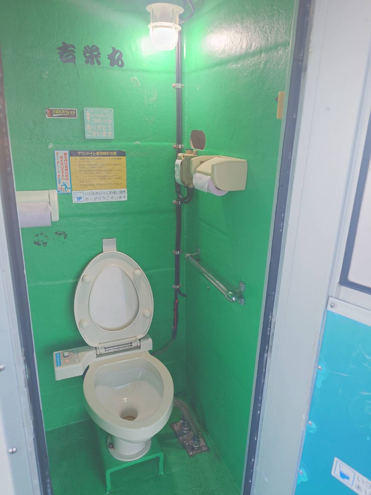
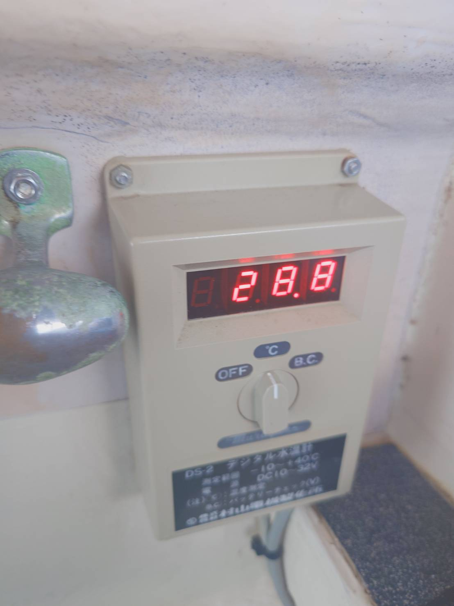

01
操舵室・航海設備
魚探やレーダーなどの航海設備を備え、 その日の海の状況を確認しながら 安全な航海を行っています。
ABOUT YOSHIEIMARU
釣れるポイントへ。
そして、何より楽しんでもらう。

MESSAGE
漁師として培ってきた経験を活かして、 その日の海の状況を見ながら、 釣れるポイントへご案内しています。
釣りを楽しんでもらうこと、 そしてお客様の喜ぶ顔を見ることが 吉栄丸の楽しみです。
「また釣れるポイントを探して行くのが面白い。」 そんな気持ちを大切にしながら、 一人ひとりに楽しんでもらえる釣りを目指しています。
SAFETY FIRST
吉栄丸では、釣りを楽しんでいただくことと同時に、 安全を何より大切にしています。
怪我のないように、楽しい一日を。FOR BEGINNERS
EQUIPMENT
吉栄丸での釣りを快適に楽しんでいただくための 船上設備をご紹介します。

魚探やレーダーなどの航海設備を備え、 その日の海の状況を確認しながら 安全な航海を行っています。

船内には座って休憩できるスペースを 用意しています。 出船中も快適にお過ごしいただけます。

釣りを快適に楽しんでいただけるよう、 船上の設備を整えています。

船内にはトイレを備えています。 長時間の釣行でも安心してご利用いただけます。

海の状況を確認するため、 水温を確認できる設備を備えています。
SERVICE
ご希望の方には血抜きに対応します。
ご希望の方には神経締めにも対応します。
YOSHIEIMARU
季節ごとの釣りを楽しみながら、 吉栄丸で特別な一日をお過ごしください。
ご予約はこちら →